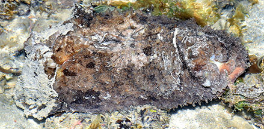
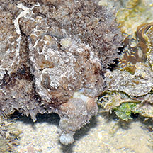
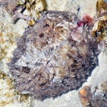
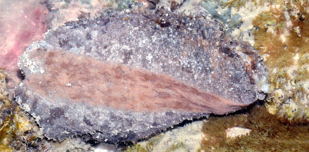
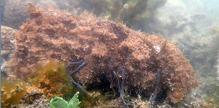
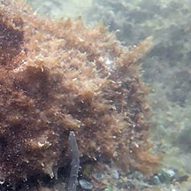
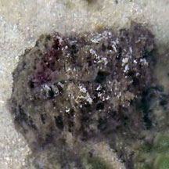
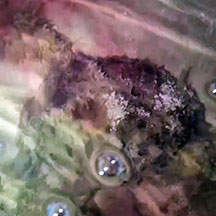
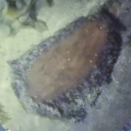
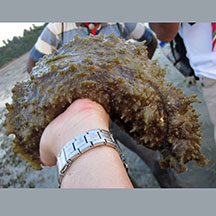

|
|
| sea hares text index | photo index |
| Phylum Mollusca > Class Gastropoda > sea slugs > Order Anaspidea |
| Wedge
sea hare Dolabella auricularia Family Aplysiidae updated Sep 2023 Where seen? This very large sea hare is sometimes seen on our Southern shores on in reefy areas well camouflaged among Sargassum seaweeds. Elsewhere found in sheltered lagoons, seagrass beds, sand or mud, and large intertidal rockpools. Features: 20-25cm. An enormous sea hare that is sometimes mistaken for a cuttlefish! It is covered in short spikes and well camouflaged. Unlike other sea hares, it doesn't have two obvious flaps at the top of the body. The back side is a sloping disk-like shield with one large siphon in the middle - where the animal exhales and where purple ink is discharged. Buried in the tissue of this "back shield" is a large flattened, heavily calcified shell. In the midline, in front of the shield is a smaller groove housing the inhalant siphon which draws water in to the almost totally enclosed mantle cavity. It has a small head with really tiny rhinophores. Said to be variable in colour, usually mottled shades of green and brown which make it extremely well camouflaged. The foot is smooth and paler. Like some other sea hares, it produces a purple ink when disturbed. What does it eat? It is apparently not fussy and will eat a variety of seaweeds: brown, red and green. |
 Terumbu Reya, Feb 23 Photo shared by Loh Kok Sheng on facebook. |
 Small head and tiny rhinophores. |
 Doesn't have obvious flaps at the top. |
 Releases purple ink when stressed. Foot is smooth and pale. |
| Other sightings on Singapore shores |
 Pulau Semakau, Jun 23 Video and photos shared by Loh Kok Sheng on facebook. |
 Small head and tiny rhinophores. |
 Pulau Semakau North, Sep 23 Video shared by Che Cheng Neo on facebook. |
 |
 |
 Pulau Semakau, Oct 09 Video shared by Marcus Ng on flickr. |
Links
|